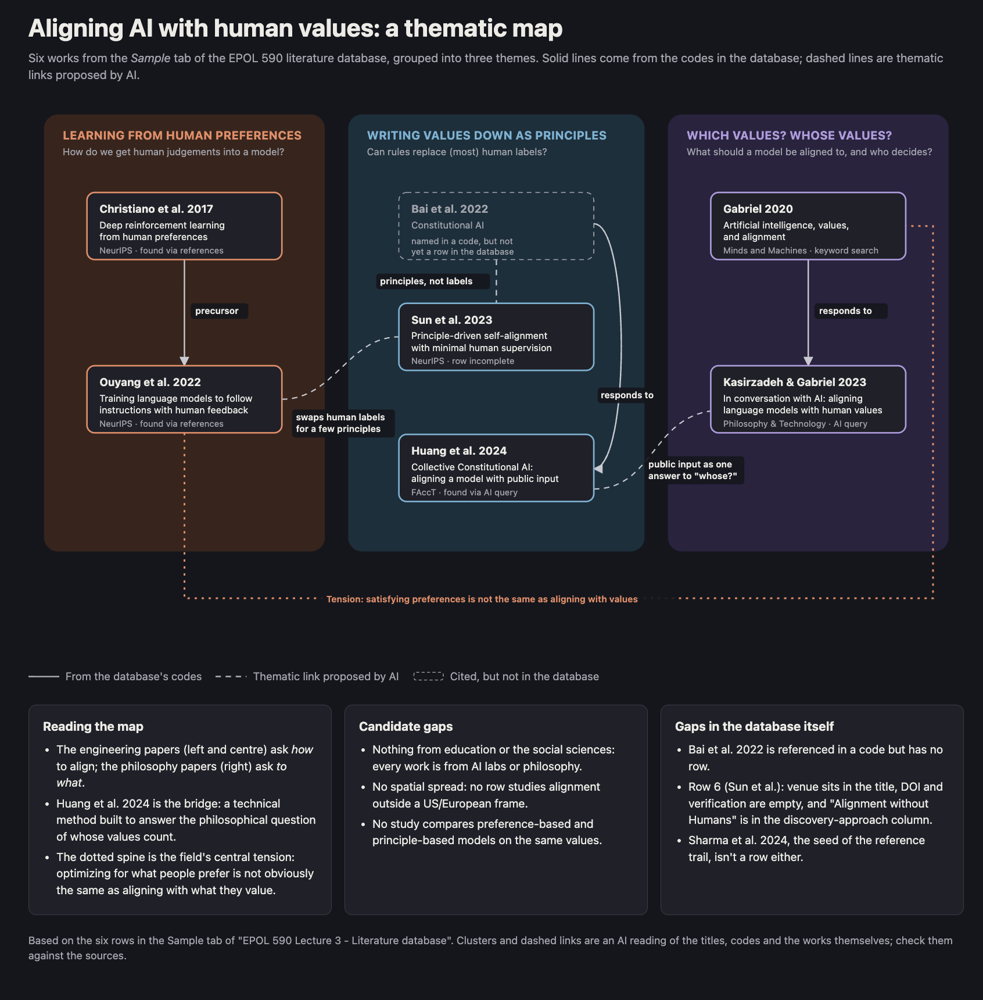

Week 5 (16 November): Structure, signposting and scholarly
communities
Fall break (23 November): no seminar
Week 6 (30 November): Reflexivity, positionality and AI in
scholarship
Week 7 (7 December): The future of scholarship and final review
workshop
Final submission: 15 December
Recap on Week 3
Moretti’s distant reading; Snow’s two cultures
Two groups, two seed articles on AI alignment - Humanities and
Science
Coding and mapping a database: chronological, thematic, relational,
spatial
Start an AI-use record
Keep AI Handy…
As we go, it’ll be helpful to have your AI of choice open
Consider using an AI you’re less familiar with
Free versions ought to be fine
Some Discussion
about AI and its Discontents
Cognitive offloading, lock-in
I no longer own what I attach my name / signature to
I lose the (difficult) pleasure of research (reading,
interpretation)
I am prey to the “unconscious bias” of the machine (Magee et
al. 2023, “Structured Like a Language Model”)
People lose trust in me / my profession / epistemic authority
generally
Endpoint? A return from episteme (evidence-based
reproducible truths) to doxa (choose your own truth)
A crisis of educational institutionalism?
One
Suggestion: Field Notes for the Literature Review
Task 6 will ask you to explain where AI influenced your searching,
reading, mapping or writing; what you checked; what you rejected; and
what responsibility you retained
Start keeping notes now: which tool for searching, what you asked,
what you checked, what you kept and what you rejected. Imagine you are
audited (you won’t be!) - how would you defend your
choices?
Be reflective on AI use: “I summarized these 10 articles with AI. It
wasn’t helpful, I didn’t appreciate any of the detail myself. So I used
AI again to break each article down.”
Re-orient perspective: not a tool for efficiency so much as
depth - “how do I really explore strengths and limitations of
perspective A, with AI as a complementary critical lens - with its own
biases? How can I get an enriched triangulated perspective?”
Other Strategies? Discuss!
Image
How do I
Structure A Literature Review?
We have been discussing principles for organizing a
literature review.
Some examples
General > Special – can confirm but also
contrast (“General theories of pedagogy suggest…
However studies of adult language learners also show…”)
Chronological (“By the 1960s, discussions of AI had already become
more muted…”)
Thematic (“The concept of ‘attention’ is used in roughly similar
ways in machine and human learning…”)
Spatial (“Studies in Asian universities show that …; in contrast,
findings from North American universities suggest…”)
Developmental (“First I will discuss Descartes’ presentation of the
mind/body problem. I then move on to look at 20th century critiques of
this distinction….”)
Relational (“Authors X and Y argue…. Claiming systemic flaws in X
and Y’s methods, Z suggests…”)
Other?
Nested Categories (chronology then thematic, etc)?
Some Guiding Notes
Specialization: Can work well when you want to convey a sense of
narrowing down a focus: Education > K12 > Math
learning > Algebra > in rural Mid-west schools
Chronological: Can work well when you want to convey a sense of
progress
And how your work extends that progress
Thematic: Can work well when you want to convey a sense of
overlaps, intersection and
gaps
And how your work discovers and fills one of these gaps
Spatial: Works well when you want to convey a sense of cultural,
spatial or geographic difference
And how your study attends to a location or zone not previously
studied
Developmental: Works well when you plan to build your argument
through a sequence of positions / thinkers / ideas
And show how you will blend, contrast or critique all of these
positions / thinkers / ideas
Relational: works well when you find a key schism or debate in the
literature
And show how you will contribute / sidestep / undermine the terms of
that debate
How do I Decide?
Typically recursive and iterative:
Go forward to discover the gap
Move back from the gap to discover the
structure
Experiment with different structures
Mock up your structure
What helps me make the best case: that an argument exists?
General > Special
General > Special: “As this review shows, the student service
field has been calibrating to emerging health and wellbeing trends among
higher education students. Less is known about how health science
professional students - a specific cohort with attuned sensitivity to
these trends - can be better served by student services. My research
aims to address this gap by…”
General: higher ed students; specific / special: health science
professional students
One strategy: find a specialized cohort / population among a more
general population that might have meaningful differences
Chronological
Chronological: “As this review shows, the literature has yet to
document the rapid rate of change in AI products used in K-12 education,
and the commensurate development of school-based policy to assess and
control these products. My research aims to address this gap by…”
One strategy: find where literature lags developments in real world
practice
Thematic
Thematic: “As this review shows, considerable attention has been
devoted to questions of cognitive load, multimodality and the rise of
learning analytics in higher education. Few studies have yet explored
the intersection of these three themes. This leads me to ask: what forms
of evidence allow us to determine the differential impacts of multimodal
learning resources on students’ cognitive load?”
One strategy: find overlooked intersections between themes
Spatial
Spatial: “As this review shows, despite the attention to use of AI
in urban middle schools, relatively little has been studied in relation
to rural middle schools. By studying use of AI at a
middle school in central Illinois, this research aims to fill a
gap…”
One strategy: find a country / state / zone / city that has been
understudied
Developmental
Developmental: “As this review shows, recent work in philosophy of
mind has responded to the emergence of AI with extended definitions of
sentience, consciousness and cognition. However, this work is yet to
address the related idea whether intention can be
divorced from consciousness, and become an independent construct to be
assessed in computational as well as biological organisms…”
One strategy: find two or concepts that are seldom referenced
together (see earlier: Magee et al. 2023, “AI” and “the
unconscious”)
Relational
Relational: “Authors X and Y both argue that childhood development
is largely unimpacted by high use of technological devices. Claiming
flaws in the methodology of X and Y, Z instead analyzes recent
longitudinal data…”
One strategy: find a famous argument / academic antagonism (Chomsky
vs Pinker; Derrida vs Searle; Honneth vs Fraser)
Systematic Reviews
(related to: Meta-analysis)
A sub-class of articles that only review - to
highlight gaps
Great if you can find them: these make your argument for you
Necessary but not yet sufficient: Is the review comprehensive? Is it
biased? Has it dated? Do you trust their methods?
Still best practice to reinforce with a review of your own
Retrospective Reviews
“I have a finding - is it novel? Search the literature to find out…”
(problem of data-driven research)
Or: “I did my review in 2025 and found a gap. I conducted my study
in 2026 based on that gap. But has someone filled it in 2026?”
Useful to consider “review” an ongoing process / conversation
A Note on Triangulation
AI or not to AI?
Mix AI systems: Does Gemini agree with ChatGPT? What about DeepSeek
(do Chinese systems differ from US systems)?
Mix AI with other computer resources (Google Scholar, databases,
even - sometimes - Reddit)
Mix AI with human sources: peers, librarians, advisors, students,
professionals
Can
Large Language Models Review the Scientific Literature? A Test Against a
102-Article Benchmark
Al Kalbani et al., 2026 - https://arxiv.org/abs/2611.05459
Takeaway: AI can augment - but certainly can’t automate - literature
reviews
Misses parts of the literature systematically (like humans
- recency bias)
Its synthesis of literature is generic.
Misses conflict (and we want to sell our research; we want
drama in our reviews). Consider: steady state scientific
progress vs Kuhn’s (1962) explosive “paradigm shift”
Largest inhibitor? Library access!
Claude Opus 5: 15 -> 79 / 102
Eight
recommendations (Al Kalbani et al., 2026)
Search with subscription access, and audit where and why the tool
was blocked.
Search publishers’ sites and databases directly, since gaps may
reflect access, not an absence of literature.
Search separately for older work.
Judge each article’s importance yourself.
Write detailed prompts, including inclusion and exclusion rules and
the kind of answer expected.
Check claims and quotations against the sources.
Don’t take a tool’s confidence as a sign it is right.
Have a human expert review the output.
The Empire Strikes
Back? Claude’s (2026) Advice
Search with access: run your AI signed in to the
UIUC Library, and keep a log of where it was blocked (paywalls,
CAPTCHAs, sites that refuse AI)
Don’t let it bulk-download PDFs; publisher licenses forbid it
Search yourself too: search the databases yourself
(Google Scholar, ERIC, Scopus), then give the AI your list to
deduplicate, check and follow citation trails
Search separately for older work, which the AI tends to miss
Supply the full texts: Zotero + UIUC Library → put
the PDFs in your AI’s project or folder
Define your categories: what counts as “central” vs
“passing”? Give an example of each, and require a quote + page number
for each judgement
Code 10–15 articles yourself first and compare with the AI
Verify the synthesis: treat it as a list of claims
to check, not a draft
Check the quotes, ask who disagrees, and trace definitions
back to their original source
Don’t trust the AI’s confidence: it is your
expertise that catches the errors
Strategies for literature
mapping
Consider the organizational approaches:
Chronological (this literature follows from this other
literature)
Thematic / conceptual (this literature discusses this theme; this
other literature discusses this other theme - and this is where they
overlap / differ)
Spatial (this literature studies phenomenon X in the US; this
literature studies phenomenon X in South Africa)
Developmental (this literature contributes this part; this other
literature contributes another part…)
Relational (this literature relates / responds to this other
literature)
Can we start to make sense of our emergent database via one or more
of these approaches?
Image
Generate and visualize the
mapping
Ask AI to generate a visualization of the
mapping
A mock literature review structure
A mock statement of the gap in the literature
Sample prompt:
“From this coded database, generate a rich visual map of the key
[chronological, thematic or relational] connections between these
works.”

Image
Aside: using text
as interim format for images
Why? More plastic / fluid representation
Example: Mermaid is a plain text format - so very easy to iterate
on with AI - “contract it”, “expand it”, “simplify it” etc.
Also works for other formats, e.g. SVG (Scalable Vector
Graphics). Allows you to evolve & iterate a representation
New Breakout Rooms
In the same database
as Week 3, use one or more of the mapping strategies to apply codes
(Mapping principle, Our code)
For example, choose “Chronological” and add, for example, “early
20th century”, “1980s”, “2020s”
Or “Thematic”, and add, for example, “philosophies of alignment”,
“human values”
Or “Spatial”, and add, for example, “examines differing approaches
between East Asian and American companies to AI alignment”
Or “Developmental”, and add, for example, “Contributes X to the
literature”
Or “Relational”, and add, for example, “cites Sharma et al.”
Then ask AI to do the same, and record its codes alongside yours
(this could even be Gemini in Google Sheets, if that is enabled)
General discussion
Share the visualizations, mock structure and gap in the
literature
Reflect: what are the affordances of AI for literature discovery and
mapping? Where does it fit - or “align” - with traditional approaches?
What are the risks? Do we agree with Al Kalbani et al. (2026)?
Break
Metadiscourse / Signposting
Assume your reader does not know the
literature
A literature review is often pedagogical - teaching
the reader about a field, in order to persuade them about the gap your
research fills
Helps you in authoring - does Y really follow from
X?
Be prepared to write / re-write this metadiscursive text often -
especially early, as you experiment with structural principles
(chronological etc)
Making It Explicit
(Nod to Robert Brandom)
Cannot be too explicit about your structure:
Introduction (future tense):
“In this literature review I will…”
(or if you prefer) “This review will…”
Conclusion (past tense):
“In this review, I have discussed literature relating to…”
(or if you prefer) “This review has…”
Along the way:
“In the last section, I discussed…. In the next, I will…”
Can be blended through connective language. “While the preceding
studies illustrated how use of AI in education has been studied
extensively, less has been said about how AI contributes to the
student/teacher relationship. Some exceptions include studies by X, Y
and Z…”
Develop a
Repertoire of Metadiscourse
Ask AI for suggestions…
“Give me examples of metadiscourse for a literature review”
Or “Give me a table and distinguish between metadiscourse used in
(a) scientific and (b) humanities discussions of literature”
Practice in Groups…
Using 3-6 sources from your database (Week 3), develop:
A paragraph of a scientific literature review
A paragraph of a humanities literature review
Ask AI to re-write both. Prompt for excessive and
**exaggerated*
Then reflect upon the pros and cons of (a) scientific and humanities
approaches and (b) what AI is doing when it re-writes a review
Make sure to introduce and conclude the paragraph.
Exaggerate the scientific and humanities styles – and
the metadiscourse!
Group
Reading with AI: Some questions (but develop your own)
What is “subaltern”? Why this term?
What is Spivak doing exactly with her literature?
Contra Foucault and Deleuze? Why? And why use Marx against
them?
Who else does Spivak assemble in what we might call the “drama” that
she stages?
Why no (or few) US scholars? Who are the key French and German
figures in her analysis?
Who are the Indian scholars, and how are these voices
mobilized?
What is the significance of the two German translations of
representation: Vorstellung and Darstellung?
A key quote - what does it
mean?
Conversely, invocations of ‘libidinal economy’ and desire as the
determining interest, combined with the practical politics of the
oppressed (under socialized capital) ‘speaking for themselves’, restore
the category of the sovereign subject within the theory that seems most
to question it.
Prompting ideas
“Produce an (abstractive / extractive) (critical / descriptive)
summary”
“Identify the latent structure of the text”
“List the key thinkers Spivak invokes - and tell us about her
relationship to them”
Develop a conceptual map?
“Find the most obscure passages or paragraphs”
then “Read line-by-line” (for a given paragraph)
“Identify and explain German / French / Hindi terms”
“Describe the influence of ‘Can the Subaltern Speak?’”
“What would Foucault or Deleuze say in response?”
etc. etc.
Takeaways?
Can AI help us with slow, close, deep
reading? Can it help us read more than the text before us?
Think of AI as “hypertext 2.0”? “Cybertext”? Palimpsestic reading
(the texts behind the text)?
If we think of terms like intertextuality, autopoiesis and Derrida’s
famous aphorism (first translated by Spivak) “There is nothing outside
the text” - was poststructuralism (Derrida, Spivak) correct?
Next Week’s Readings
Follow-up on your own recipe: readings from your own project - feeds
into Tasks 3 and 4
This
Week’s Activity: Task 3 · Conceptual map of the literature (10%)
Develop a small database (if you don’t have one)
Note as you go: what did you include? what did you exclude?
Create one or more conceptual maps (visual or verbal), using AI
of your choice
Analyze for missing perspectives / views - what
sits in the blank spaces / silences of your maps?
Now identify one or more candidate gaps. Are
these real? Or are they indicators to re-examine the
literature? Can you triangulate this identification?
This is a recursive and iterative
task.
Write-up: write 1 paragraph in response to each of the
following:
Compare these gaps with your research topic or question. Do they
align? Does your topic need narrowing?
Does the spatialization - to use Bryan’s phrasing - add
germane or extraneous cognitive load? Does it help
you? Or your reader? Can you describe the visual gaps
verbally?
Based on the map: what looks like good principles for
organizing the literature?
Due Monday 16 November, 11:59 PM Central
Next
Week’s Activity: Task 4 · Literature review writing sample (10%)
Compare scientific and humanities modes of framing or
interpretation; explain which choices serve your question and
audience
Then develop three paragraphs that synthesize
literature (rather than describing articles one at a time). What is the
literature saying? How do you organize its conversation?
Write one further paragraph of commentary on your choices of
audience, voice and evidence
Due Monday 23 November, 11:59 PM Central
Peer review
Peer review of Task 4 due Monday 30 November, 11:59 PM Central
What to do: Visit two other tabs, and review either:
the concept map and paragraphs (Week 3), and then comment: is the
map understandable? Do you see the gap emerging?
the literature review sample (Week 4), then comment: is the sample
understandable? Do you see the gap emerging?
Reflecting and
Preparing the Final Review
Review weeks 1-4:
What kind of literature review is accumulating here?
Do you see a cogent literature review developing?
What more would help? What do you need from me?
Future Weeks
Week 5 (16 November): Structure, signposting and scholarly
communities
Fall break (23 November): no seminar
Week 6 (30 November): Reflexivity, positionality and AI in
scholarship
Week 7 (7 December): The future of scholarship and final review
workshop
Final literature review due Tuesday, December 15, 11:59 PM
Central